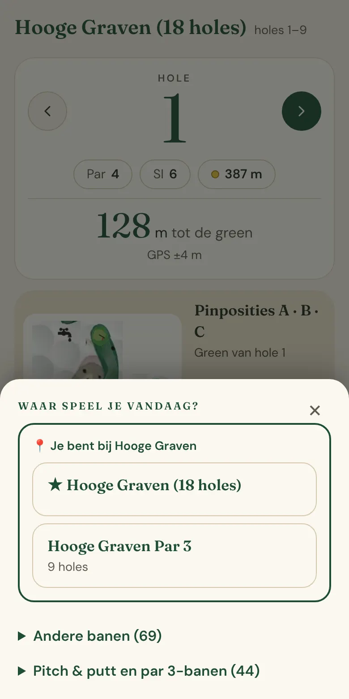
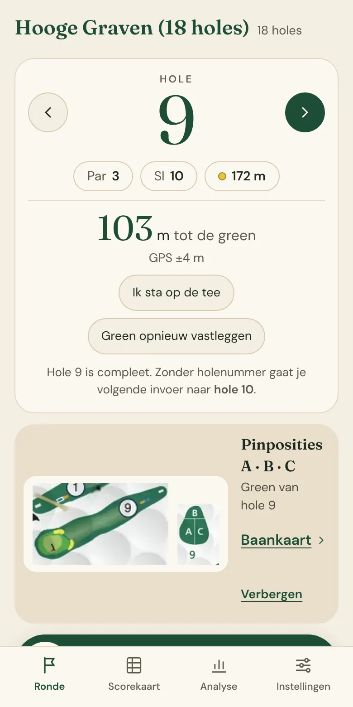
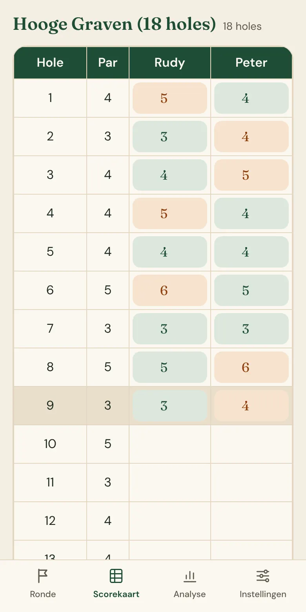
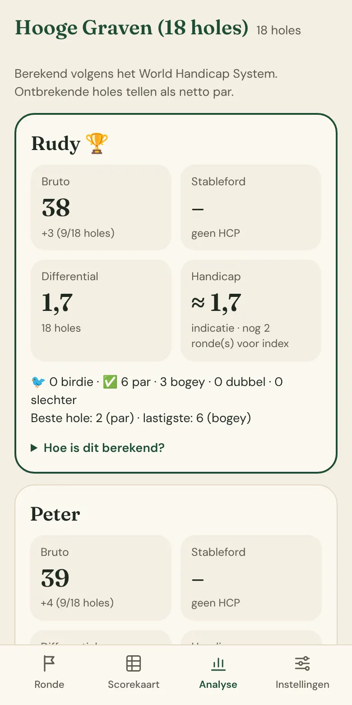

Golfscore
Spreek je slagen in terwijl je loopt – “Hole 4, Rudy 5, Peter 4” – zie de afstand tot de green en krijg na de ronde direct je stand en handicapberekening.
Open de app Opslagdienst controleren…



Hoe werkt het?
Kies je baan
Bij het openen kies je de baan en waar je begint: hole 1 of hole 10, 9 of 18 holes. Sta je op de club, dan staat die baan met GPS al bovenaan. Ga je na een paar uur weer verder, dan vraagt de app of je een nieuwe ronde wilt starten.Spreek je score in
Tik op de microfoon en zeg bijvoorbeeld “Hole 4, Rudy 5, Peter 4”. Speel je alleen, dan is “Hole 4, 5 slagen” genoeg. Ook golftermen werken: “Rudy par, Peter bogey”. Zegt de app iets niet goed te begrijpen, dan vraagt hij het even na.Of tik per slag
Liever niet praten? Tik bij elke slag op de naam van de speler; de telefoon trilt kort zodat je niet hoeft te kijken.Afstand tot de green
Zet GPS aan en de app toont de afstand tot het midden van de green, en springt vanzelf naar de juiste hole als je op de tee staat. Voor Hooge Graven staan de greens al klaar; op andere banen leg je ze één keer vast.Na de ronde
Je ziet per speler bruto, stableford, score differential en een handicapindicatie, berekend volgens het World Handicap System, met uitleg hoe het berekend is.
Slecht bereik op de baan? Geen probleem: de app werkt zonder internet verder en bewaart alles op je telefoon. Zodra er weer verbinding is, wordt alles vanzelf gesynchroniseerd.
Installeren
Golfscore is een web-app: je zet hem vanuit de browser op je beginscherm. Daarna opent hij als een gewone app, zonder adresbalk, en werkt hij ook zonder bereik.
- Open kaprudy.github.io/Golf in Chrome.
- Tik rechtsboven op het menu ⋮.
- Kies App installeren (of Toevoegen aan startscherm) en bevestig met Installeren.
- Open Golfscore vanaf je startscherm. Sta de microfoon toe bij de eerste keer inspreken, en de locatie als je GPS wilt gebruiken.
- Open kaprudy.github.io/Golf in Safari (niet in Chrome of een andere app).
- Tik onderin op de deelknop ⎋ Deel (het vierkantje met de pijl omhoog).
- Scroll naar beneden en kies Zet op beginscherm, en tik op Voeg toe.
- Open Golfscore vanaf je beginscherm. Sta de microfoon en spraakherkenning toe bij de eerste keer inspreken, en de locatie als je GPS wilt gebruiken.
Een account is niet nodig: je gegevens worden bewaard en gekoppeld aan je telefoon. Wil je ze ook op een nieuwe telefoon terugzien, maak dan na een ronde een account met je e-mailadres.
Banen
De app kent de banen in de regio, met par, stroke index, lengtes en de officiële course rating en slope van de clubs.
Je gegevens
- We bewaren alleen wat nodig is: je spelers, banen en rondes, en – als je een account maakt – je e-mailadres met een versleutelde vorm van je wachtwoord (scrypt).
- Je eventuele Claude API-sleutel komt nooit op de server. Je locatie tijdens de ronde blijft op je telefoon.
- Alles gaat via een beveiligde verbinding (HTTPS). Iedere gebruiker ziet alleen zijn eigen gegevens.
- De beheerder ziet alleen aantallen (accounts, rondes, gedeelde zinnen) en e-mailadressen, niet je scores. Gedeelde spraak is zonder namen en alleen met je toestemming.
- Je kunt je account en al je gegevens verwijderen via de app: Instellingen → Account en cloud.